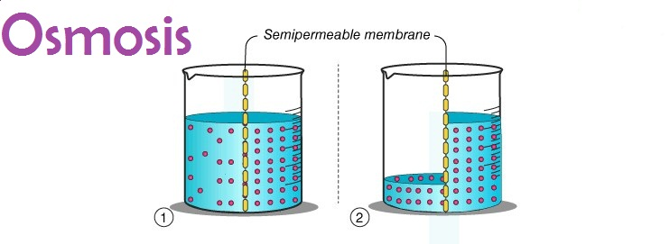
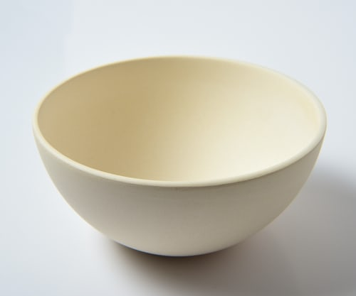
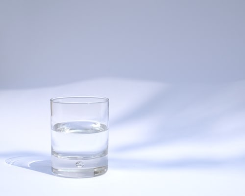
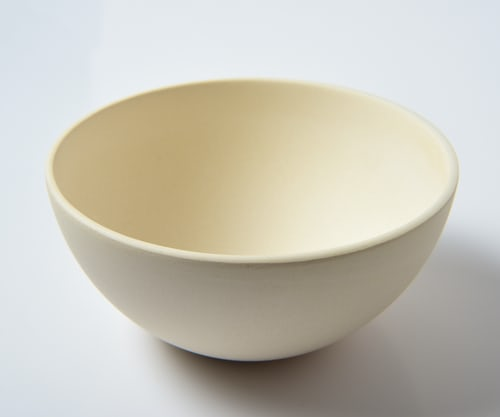
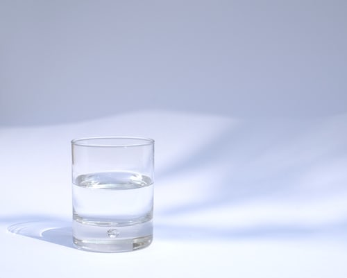
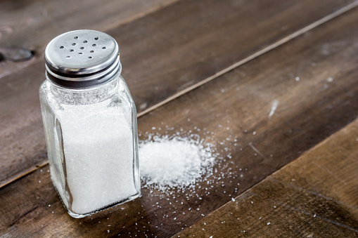
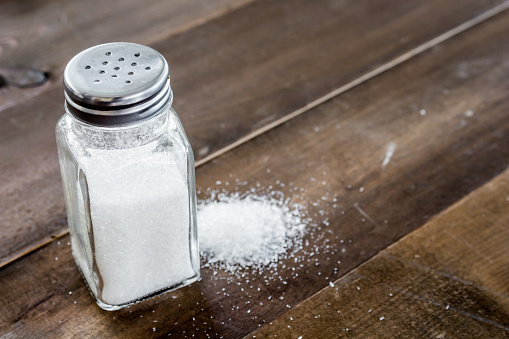
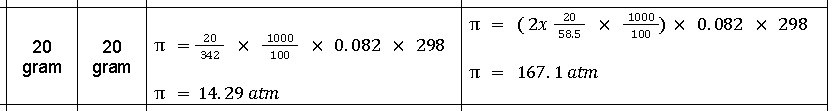

Praktikum Kimia
Osmosis

Alat & Bahan
 



 

- Kentang
- Air
- Gula
- Garam
- Wadah
- Pisau
Langkah-Langkah
1. Siapkan alat dan bahan
2. Kupas & potong kentang menjadi berbentuk kubus dengan ukuran 4cm
3. Amati tekstur fisik, ukuran, dan warna pada kentang, lalu timbang menggunakan timbangan digital
4. Masukan kentang masing masing kedalam wadah yang berisi larutan 20g gula dan 20g garam
5. Proses perendaman dilakukan selama 48 jam
6. Lihat & catat perubahan yang terjadi selama 2 x 24 jam. Lihat dari segi tekstur, warna, ukuran, dan juga massa
Hasil
Tabel Pengamatan
| Kentang | Gula(20g) | Garam(20g) |
|---|---|---|
| Sebelum | Massa 59,7 g. Kuning Cerah & Keras |
Massa 61,9 g. Kuning Cerah & Keras |
| Hari 1 | Massa 53,6 g Kuning Cerah & Keras |
Massa 57,6 g Kuning Pucat Kehitaman & Kenyal |
| Hari 2 | Massa 49,1 g Kuning Cerah & Sedikit Kenyal |
Massa 55,1 g Putih Pucat Kehitaman & Kenyal |
Reaksi Kimia
Reaksi Dalam Larutan Gula
C12H22O11 (s)
+ H2O(l) -->
C12H22O11 (aq)
+ H2O (aq)
Reaksi Dalam Larutan Garam
NaCl(s)+ H2O(l)
-->
NaOH(aq)+ HCl(aq)
Perhitungan

Pembahasan
| No | Pembahasan | Hubungan Van't Hoff dengan Larutan |
|---|---|---|
| 1 | Saat kentang direndam dalam larutan 20g garam serta 20g gula akan terjadi perpindahan air secara osmosis dari sel-sel kentang keluar menuju ke larutan | Faktor Van’t Hoff digunakan pada larutan garam karena larutan tersebut memiliki sifat elektrolit. Hal ini dilakukan karena pada larutan elektrolit, jumlah zat yang terlarut lebih banyak dibandingkan dengan zat non-elektrolit |